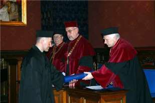
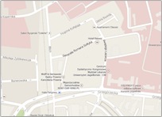

Życiorys CENTERMEDul. Łazarza 14, Kraków
tel. rejestracji: (12) 370 82 00
Gabinet Prywatny
ul. Rakowicka 17/7, Kraków
tel. rejestracji: 500 802 500
E-mail: admin@marekgorniak.pl
Wykształcenie
1992 dyplom lekarski, Wydział Lekarski, Uniwersytet Jagielloński, Kraków
1992doktorat, Wydział Lekarski, Uniwersytet Jagielloński, Kraków, na podstawie pracy o laparoskopowym leczeniu
żylaków powrózka nasiennego u dzieci i młodzieży.
I stopień chirurgia dziecięca 1996, no 1124/178/1996
II stopień chirurgia dziecięca 2000, no 34192/3/I/2000
urologia dziecięca listopad 2005
Kariera zawodowa i miejsca pracy
asystent Wydział Lekarski Uniwersytetu Jagiellońskiego w Krakowie, 1992-1993
mł.asystent Klinika Chirurgii Dziecięcej, Polsko-Amerykański Instytut Pediatrii w Krakowie 1993-1996
st. asystent Klinika Urologii Dziecięcej, Polsko-Amerykański Instytut Pediatrii, Kraków 1996-2003
Oddział Chirurgii Dziecięcej, Specjalistyczny Szpital im. Stefana Żeromskiego, Kraków, 2003-2012
Konsultant SCANMED Kraków, 2001-2008
Konsultant MEDICINA, Kraków, 2000-2006
Konsultant CENTERMED Kraków 2008-obecnie
Polskie Towarzystwo Chirurgów Dziecięcych od 1994
Polskie Towarzystwo Mikrochirurgii od 1999
Polskie Towarzystwo Urologii od 2000
Polskie Towarzystwo Urologii Dziecięcej od 2009 (w gronie członków założycieli)
International Pediatric Endosurgery Group (IPEG) od 2011
Nagroda Towarzystwa Asystentów UJ za najlepszą publikację roku 1996
Egzamin specjalizacyjny II stopnia z chirurgii dziecięcej zdany z wyróżnieniem 2000
Obecnie operuję w CENTERMED Kraków. Jest to nowoczesny prywatny szpital, nastawiony na wykonywanie zabiegów chirurgicznych różnych specjalności. Do dyspozycji ... czytaj więcej
Obecnie operuję w CENTERMED Kraków. Jest to nowoczesny prywatny szpital, nastawiony na wykonywanie zabiegów chirurgicznych różnych specjalności. Do dyspozycji ... czytaj więcej
Obecnie operuję w CENTERMED Kraków. Jest to nowoczesny prywatny szpital, nastawiony na wykonywanie zabiegów chirurgicznych różnych specjalności. Do dyspozycji ... czytaj więcej
(12) 370-82-00
Adres szpitala CENTERMED:
ul. Łazarza 14, Kraków
Przyjmuje codziennie od 9 rano,
jedynie w poniedziałki od 16stej.
Czwartki to dni w całości przeznaczone
na leczenia operacyjne.
Jak do nas dojechać:
